Walking into a living room that still feels "off" despite a great couch, a trendy rug, and a genuinely good color palette almost always comes down to one thing: the layout. Furniture arrangement is sneaky that way, get it wrong and nothing else in the room quite lands the way it should.
Whether the space is a cramped apartment, an awkward floor plan, or a wide-open blank canvas, there's a setup built for it. None of these require buying anything new, just a willingness to push furniture around a few times until it clicks.

15 Living Room Layouts for Every Space
1. The Minimalist Dream
For anyone who genuinely doesn't want clutter, the minimalist layout is really about editing down to the essentials.
One streamlined sofa, one coffee table, and an optional single chair or pouf is the entire formula, nothing more gets added.
Neutral tones and low-profile furniture make the whole room feel instantly larger and calmer than a more furnished layout ever could.
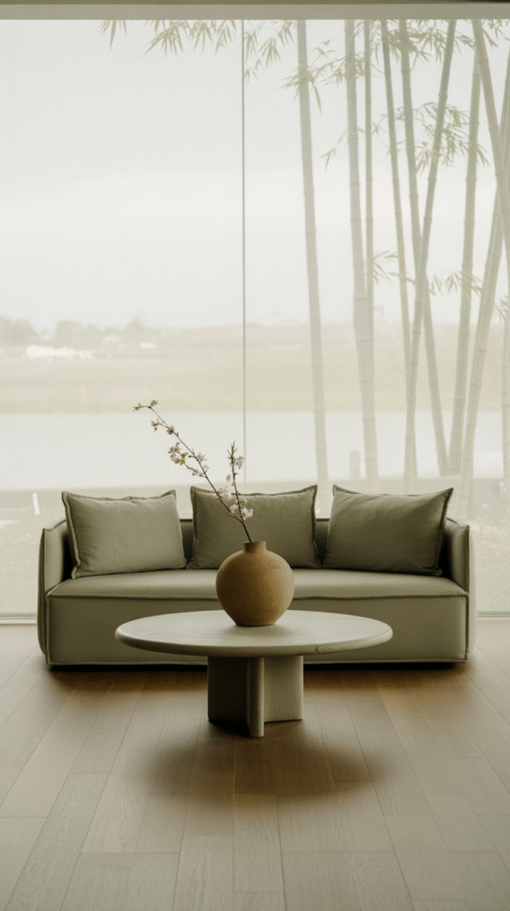
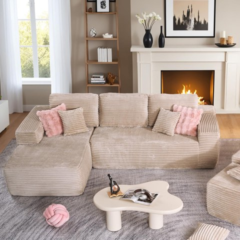
HOOOWOOO L-Shaped Sectional Couch, 106 Inch, Assembly Free, Extra Deep Corduroy
Shop on Amazon2. Window-Facing Zen
A room with genuinely good windows should be arranged to actually use them, not ignore them in favor of facing a blank wall.
Turning the sofa toward the view instead of away from it makes the space feel calmer and considerably more connected to the outdoors.
Sheer curtains soften the light coming in, and a leafy plant or two rounds out the quiet, window-facing mood.
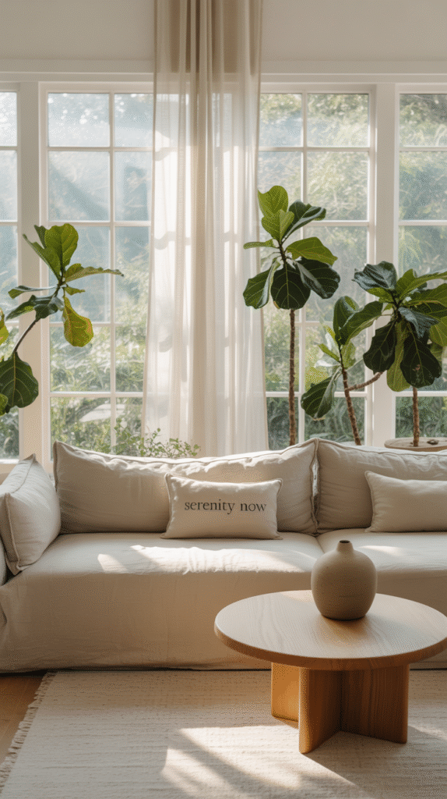

3. Kids and Adults, Clearly Split
A household with young kids doesn't need to pretend the living room stays photo-ready at all times, splitting the space smartly solves more than it hides.
An adult zone with the couch, chairs and a coffee table that's off-limits to little hands sits apart from a kid zone with a soft rug and a toy basket.
A shelf or bench between the two keeps the space open while still giving each zone its own clear boundary.
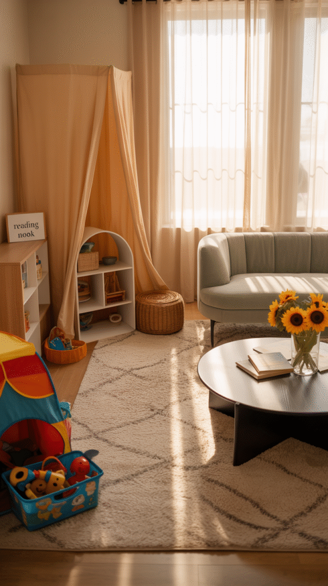
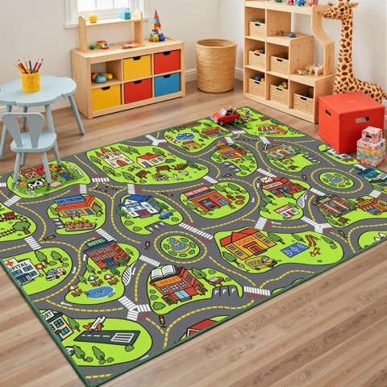
Non-Slip Kids Car Rug, Road Playmat for Toy Cars, Educational Town City Map
Shop on Amazon4. Diagonal Drama
Angling furniture on the diagonal sounds unconventional, but it genuinely works in the right room.
It breaks up a boxy floor plan, adds visual interest that a straight arrangement never creates, and makes a long, narrow room feel noticeably wider.
Angling the sofa toward a corner, especially one with a TV or fireplace, gives the whole layout a surprisingly designer-level feel.
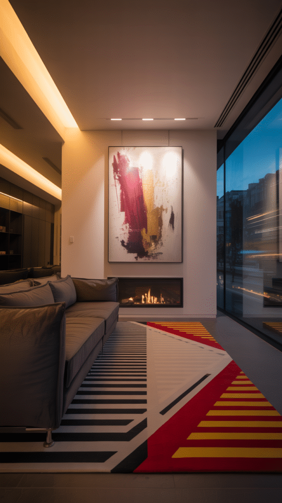
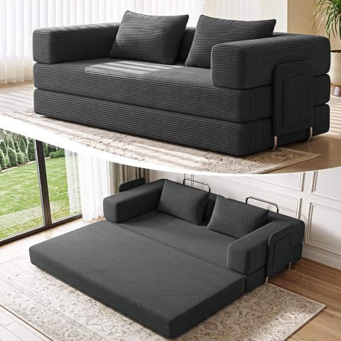
78 Inch 5-in-1 Convertible Futon Sofa Bed, Boneless Couch for Living Room
Shop on Amazon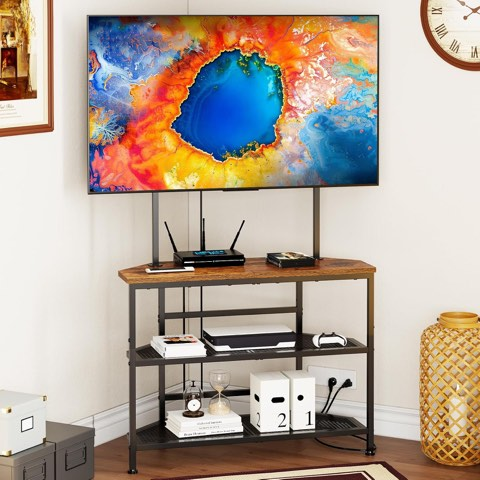
Floor Corner TV Stand with Mount, 23 to 60 Inch, for Bedroom and Living Room
Shop on Amazon5. The Multi-Tasking Layout
A living room that has to pull double duty needs a layout that acknowledges that directly rather than fighting it.
Splitting the space, sofa and chairs for lounging on one side, a small desk or reading corner on the other, lets both functions coexist.
A rug or a lighting shift between the two zones is usually enough to visually separate them without adding a wall.
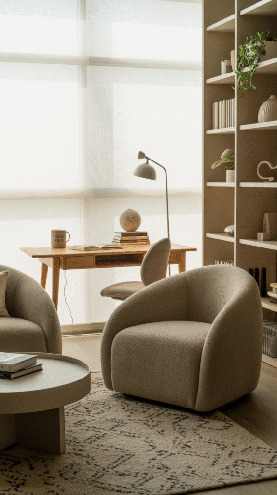
6. Built for Conversation
This layout skips the television as the focal point entirely and prioritizes face-to-face conversation instead.
A cozy sectional angled toward a round table, rather than toward a screen, keeps the whole room oriented around talking rather than watching.
It's the right call for a household that leans more toward game nights and long conversations than toward background TV.

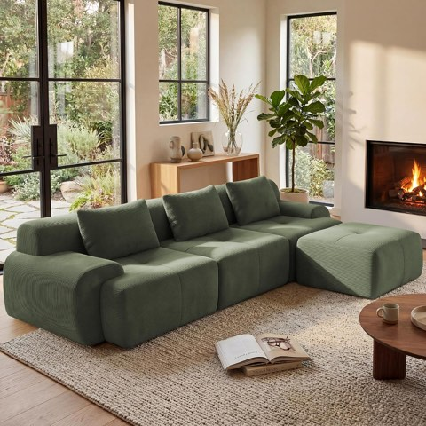
GRUSIGN 108 Inch Modular Boneless Sofa, Sectional Couch for Living Room
Shop on Amazon7. Zoned Out for Open Floor Plans
When the living room blends straight into the kitchen, dining area, or home office, zoning becomes essential rather than optional.
A rug visually separates the seating area, the sofa faces away from the dining space, and a console or shelf acts as a subtle divider between zones.
The open space ends up feeling purposeful instead of like one long stretch of furniture with no clear boundaries.
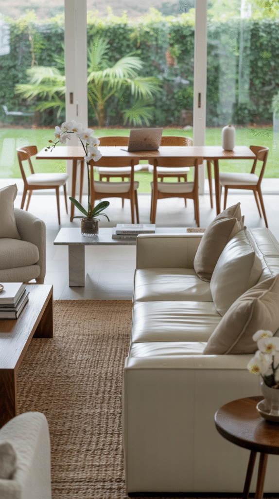
8. Double Sofa Energy
For a room with the square footage to spare, two full sofas facing each other brings a genuinely elevated feel.
A statement coffee table anchoring the center, with lamps or sconces behind each sofa for ambient light, completes the look.
It's fancy without trying too hard, and it's an especially strong setup for entertaining a group rather than just one or two people.
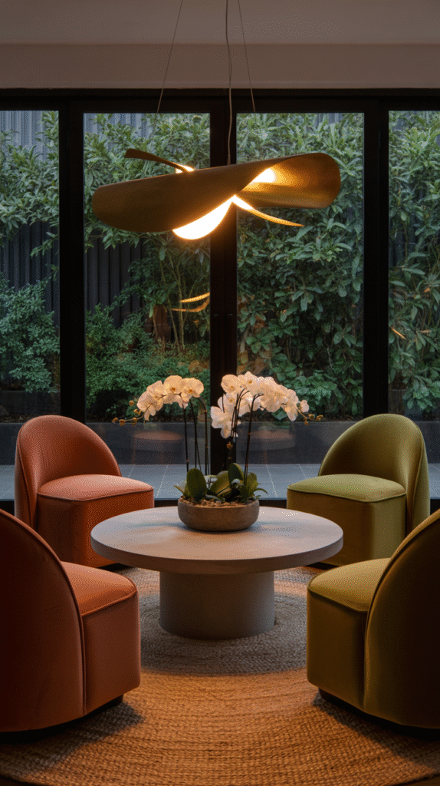
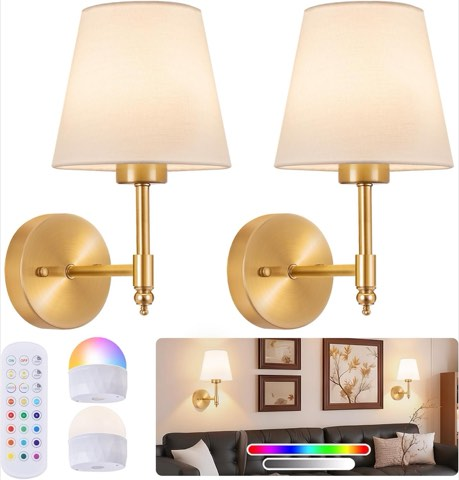
Battery Operated Wall Sconces, Set of 2, Rechargeable Wireless Wall Lights
Shop on Amazon9. The Corner Hugger
An awkward unused corner stops being a problem once a sectional or small couch gets nestled directly into it.
A cozy corner sectional with soft pillows and a knit throw, paired with a round coffee table and a jute rug, opens the rest of the room up naturally.
This layout delivers a genuine cozy nook without adding any real clutter to the floor plan.
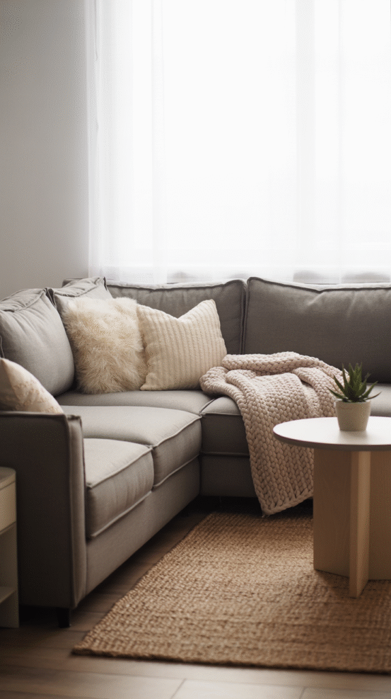
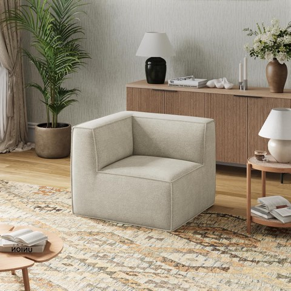
Novilla No-Assembly Modular Sectional Cloud Couch with Smarts Coil Support
Shop on Amazon10. Two Loveseats Instead of One Sofa
A room too small for a full sofa doesn't have to settle for less seating, two loveseats offer nearly the same capacity in a more flexible footprint.
They can sit parallel to each other or be angled inward depending on how social the room needs to feel.
Paired with a square or round coffee table, the whole arrangement keeps a natural flow even in a genuinely tight space.
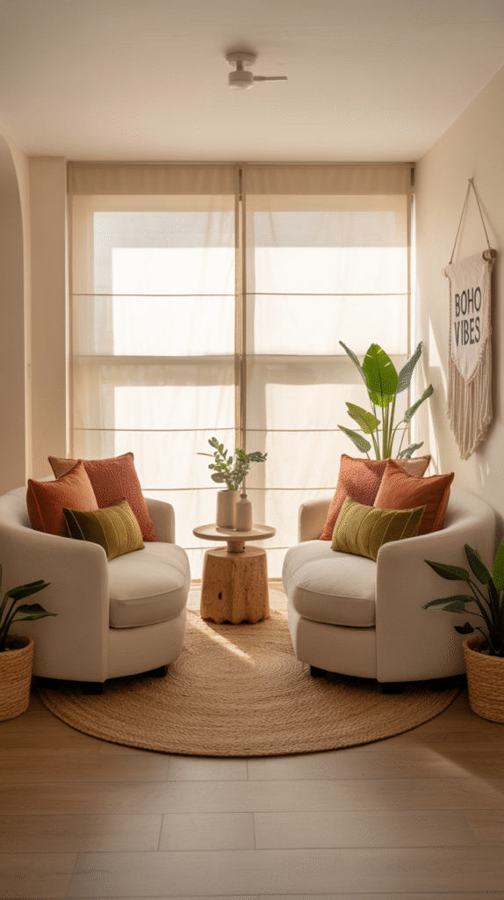
11. Built Around the TV
For a household that genuinely organizes the whole room around screen time, this layout just leans into it honestly.
The sofa sits directly across from the television, with chairs or poufs added to the side rather than in the sightline, and the coffee table stays low so nothing blocks the view.
A media console with hidden storage handles the remotes, cables, and general tech clutter that tends to pile up around a TV setup.
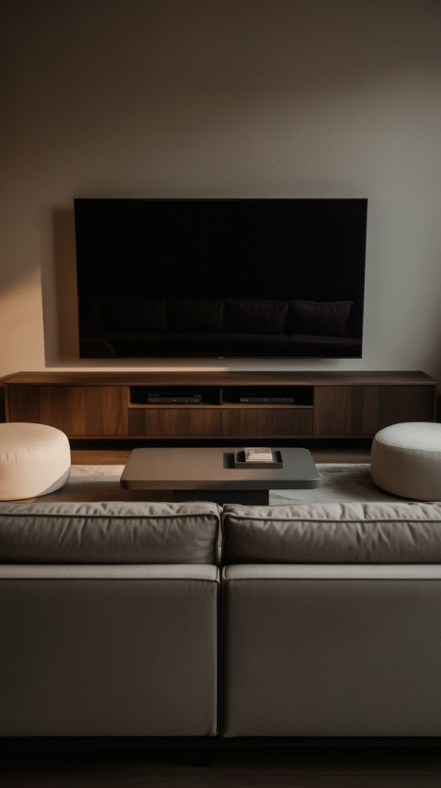
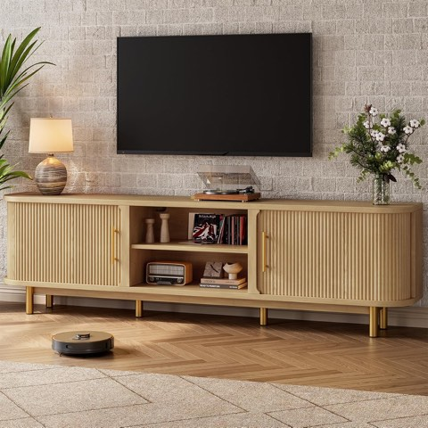
70 Inch Mid-Century Fluted TV Stand for TVs up to 75 Inch, with 2 Storage Cabinets
Shop on Amazon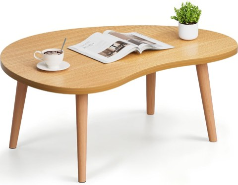
FAMIDGE Low Oval Japanese Floor Coffee Table with Solid Wood Legs, 23.6 Inch
Shop on Amazon12. Floating Furniture, Away From the Walls
The sofa doesn't actually need to sit against a wall, and pulling it inward changes the whole feel of a large or open room.
Floating the furniture toward the center, with a slim console table behind the sofa for extra style and storage, makes the space feel custom rather than just filled.
It's one of the easiest ways to make a layout read as intentional instead of like furniture that landed wherever it fit.
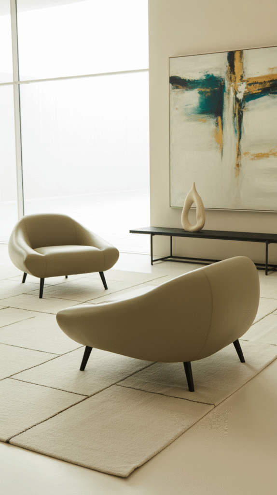
13. The Symmetrical Setup
For anyone who gets genuinely bothered by things not lining up, a symmetrical layout delivers real visual calm.
A sofa placed directly across from two matching chairs, paired with identical lamps or side tables on each side, creates instant balance.
The result reads as considered and intentional the moment anyone walks in, nothing about it feels accidental.
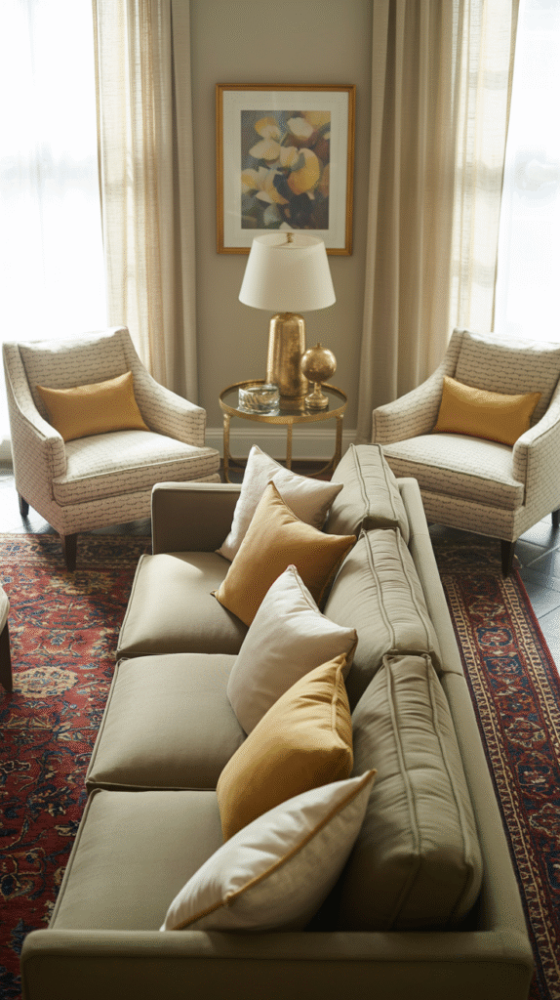
14. The L-Shaped Sectional
An open floor plan or an awkwardly wide room is exactly where an L-shaped sectional earns its keep.
It defines the living room zone inside an open layout, gives everyone an actual seat, and works almost like a soft room divider without ever reading as a wall.
A round coffee table in the middle softens all those right angles and keeps the whole arrangement from feeling too boxy.
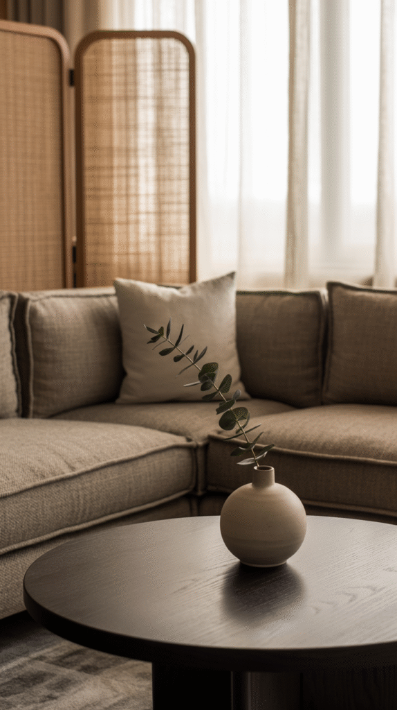
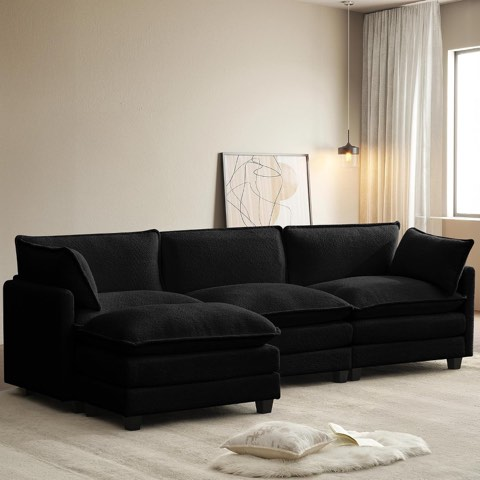
ROWHY 112 Inch Modular Sectional Cloud Couch with Movable Ottoman, Black Chenille
Shop on Amazon15. Face the Fireplace
A fireplace is already begging to be the room's focal point, so the layout might as well commit to it fully.
Floating the sofa two to three feet off the wall gives the arrangement real breathing room, and two accent chairs angled inward turn it into a genuinely conversation-ready setup.
It works especially well for cozy conversation or a quiet evening of background noise from the fire, the layout does most of the mood-setting on its own.
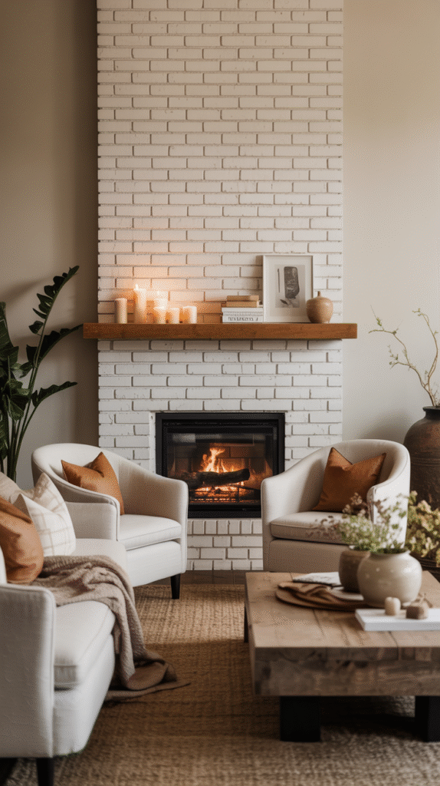

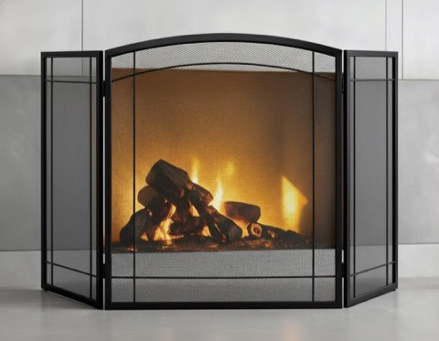
FEED GARDEN 3-Panel Fireplace Screen, 48 x 29 Inch, Foldable, Wrought Metal
Shop on AmazonFinal Thoughts
A fortune spent on decor can't fix a layout that doesn't work. It's the furniture equivalent of a beautifully tailored outfit that doesn't actually fit, uncomfortable no matter how good it looks from across the room.
Moving things around five times before it finally clicks is normal, not a failure. Look at the space, picture the setup that actually fits how it gets used, and start shuffling, the right layout is usually just a few furniture moves away.